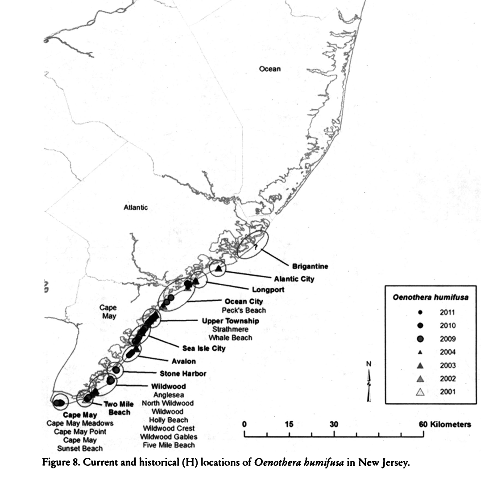
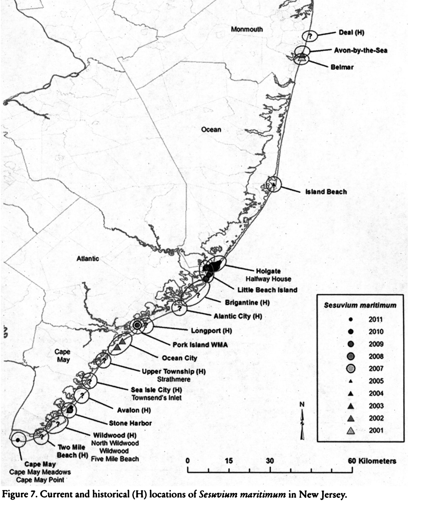
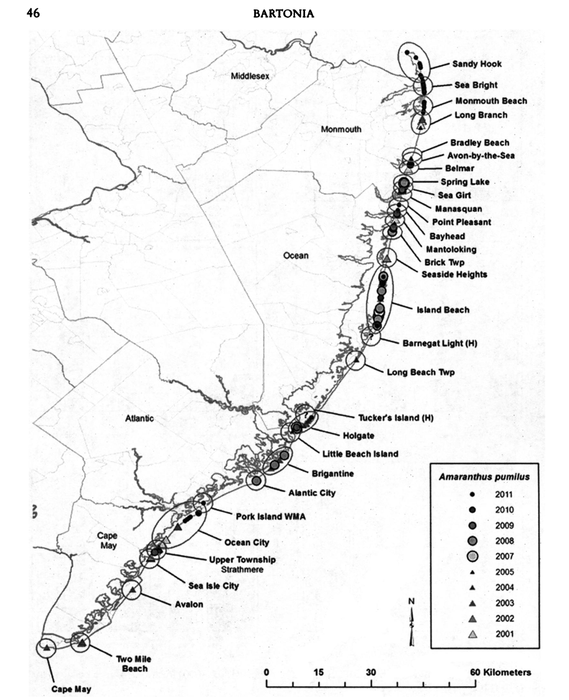
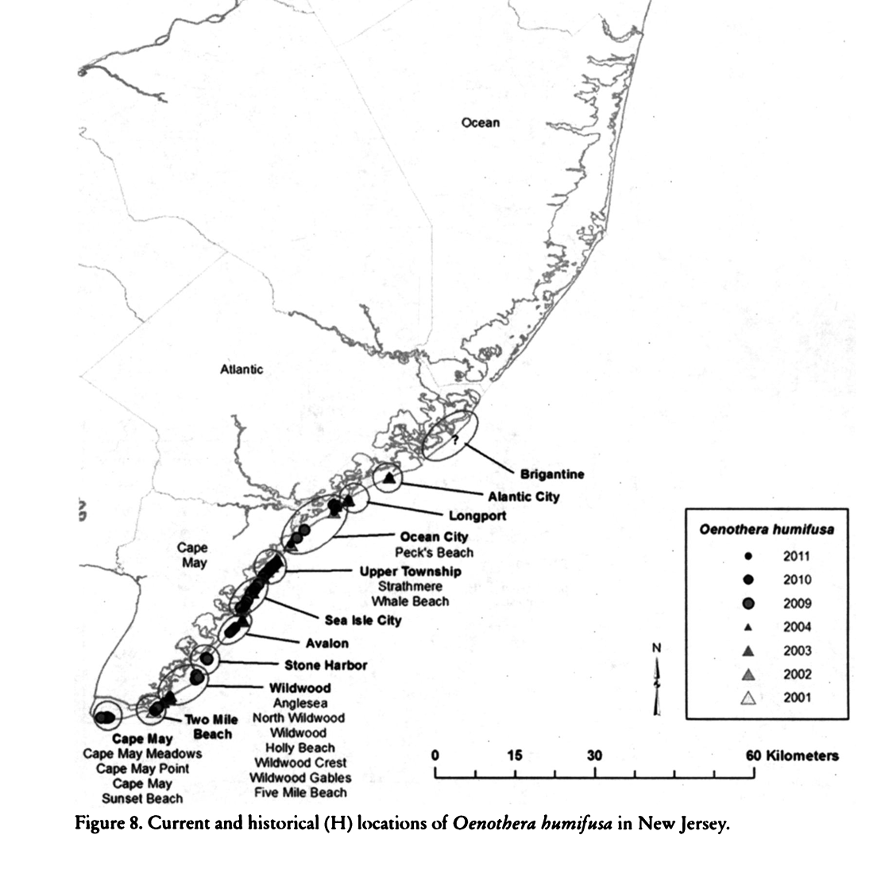
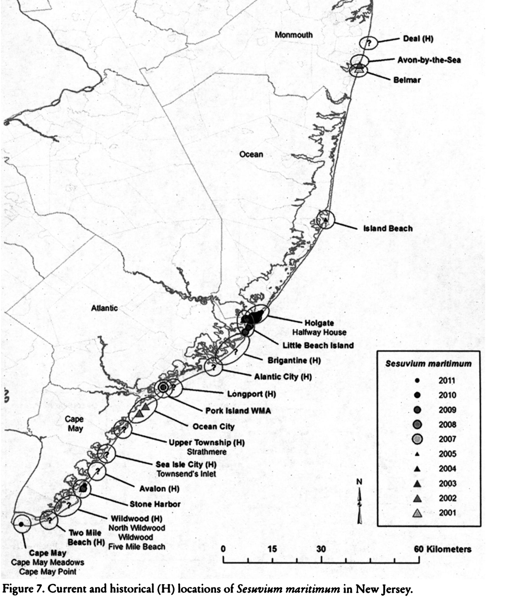
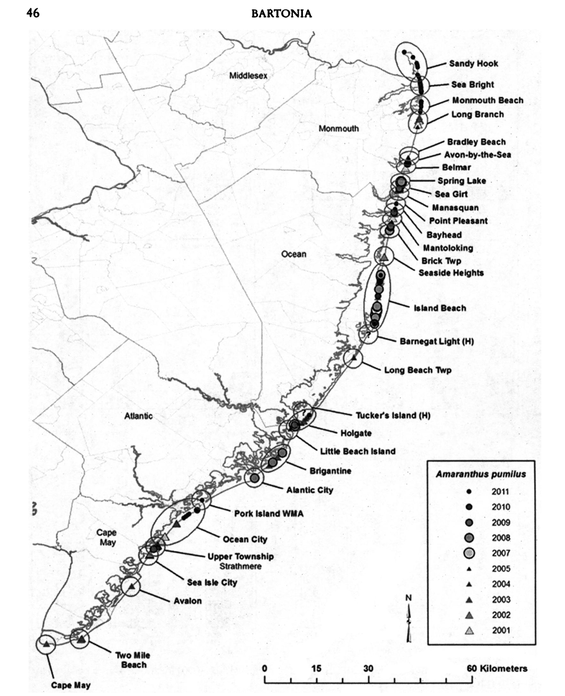

It starts with seeds. Or, rather, a scattering of seeds blowing across the sand and bobbing in the tidal wash. What might appear at first as an unassuming tuft of green clover sparsely dotting the edges of shoals and barrier islands along the Atlantic coast, Amaranthus pumilus - commonly called seabeach amaranth - lives a dynamic life. Amaranth thrives in the perpetual flux of coastal habitation, growing in the overwash and sedimentary deposits formed by the natural ebb and flow of tidal waves. An invaluable member of early succession ecosystems, amaranth's ability to put down roots in this shifting landscape helps form and stabilise sand dunes while simultaneously limiting natural coastal erosion.
Seabeach amaranth has an even more common name, the "fugitive plant", a moniker granted due to its unique survival mechanisms. It can be said from germination to dispersal the amaranth lives its life on the run in a continual struggle to remain evolutionarily and geographically ahead of climate change. But what might it mean to call a plant merely acting out its evolutionary imperative to survive a fugitive;